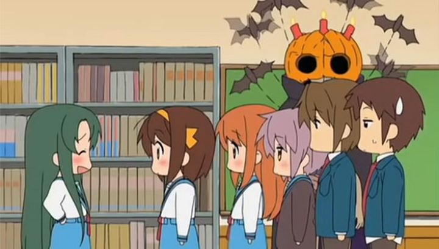

Disclaimer: this review covers both "The Melancholy of Haruhi-Chan Suzumiya" and "Nyoron! Churuya-San," which are typiccally released together on home video in North America.Regarding the infamous and immortal "Haruhi Suzumiya" franchise of anime pop-culture, my first exposure to it was NOT the main series, but rather the spin-off series of comedic shorts called "The Melancholy of Haruhi-Chan Suzumiya." I watched a bit of it in a school anime-club (the club was relatively easy-going and would screen a wide variety of anime both good and bad, as such it was a good way to get out of your comfort zone if you only watch certain genres of anime). This series was originally released online rather than for television broadcast, and due to the extreme popularity of the franchise, Bandai Entertainment released this spin-off in its own DVD release in America, with a complete English-dub to boot with the same notable cast of the main series. When Bandai's American distribution arm went out of business, Funimation would eventually release all of the content, both from the main series and this unusual set of shorts. Anyway, I had heard that the main "Haruhi" series was popular, funny, and at times just plain ridiculous. When I saw "Haruhi-chan" for the first time, I assumed it WAS the main series, as it seemed to check-off each of those boxes. When I did eventually watch the main series, I was slightly disappointed... from a quirky-humor standpoint, "Haruhi-Chan" was more fun to watch, and did a better job living up to that hype.However, anime consisting of short episodes only a few minutes in length don't tend to translate well as entertianment worth investing time or money in, and "Haruhi-Chan" was no exception. The premise is to take all the characters from the show, draw them in chibi (deformed cute midget) form, and tell short jokes, the kind you might read in the Sunday-comics section of a newspaper. These jokes might revolve around recreations of certain scenes from the main show, parodying itself in a way only fans would understand. They might revolve around entirely new situations, lining up each joke after each other. There is no particular over-arching plot, just jokes and gags. The visuals are simplistic and cute, typically placing characters in front of white backgrounds (read: no background at all) and animation is virtually non-existant. When it is present, animation shifts between different styles, using both 2D and 3D animation, and given that visual quality isn't an important factor of the show (even if at 240p, you can still enjoy the show all the same), the variety is an asset more than it ought to be. The music is soft and mellow, and the joke delivery is typically calm, as if all the characters are trying to play the straight-man, only occasionally cracking under some of the silliness. This all isn't necessarily a bad thing: "Haruhi-Chan" is a pleasently soothing show to watch in the background. Some of the situations will bring out a chuckle. But most of the humor does rely on you having seen the main series of "Haruhi," either to recognize certain scenes, or to understand character relationships and motivations. Even if you do understand all the jokes, the atmosphere is so calming that one could easily fall asleep watching it. I'm still baffled that an English dub was made for this, and given how good that English cast is, it's almost worth watching the show to hear them alone, but given the content, I figure the actors too struggled to not nod off during recording. 
There is also another net animation called "Nyoron! Churuya-San" that uses a vaguely similar style. It focuses on a very cute chibi version of Nyoron, who tries to make friends with the other characters, only to end up disappointed. Her sad face and her sighing "